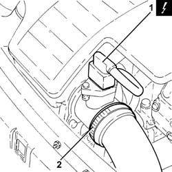
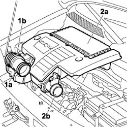
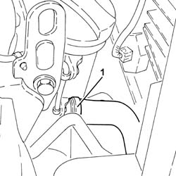
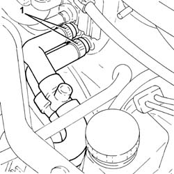
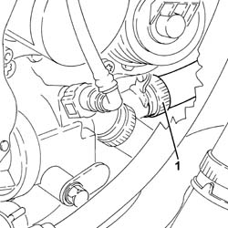
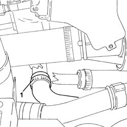
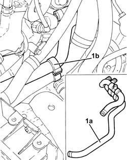

5010A50 single water inlet and outlet pipe to/from heater - r r
- Path
- Procedures > 50 AUXILIARY UNITS > 5010 CLIMATE CONTROL - MISCELLANEOUS > 5010A HEATER WATER PIPES > 5010A50 single water inlet and outlet pipe to/from heater - r r
- Kind
- repair procedure (removal / refitting; the operation number is the code)
- Applies to
- engines: 1.3 JTD 16V; all production periods
- Interactive page
- https://sloeber94.github.io/elrnDB-fDbl/en/#/2584793
Applies to: engines: 1.3 JTD 16V; all production periods
 Removing
Removing
 Refitting
Refitting
Applies to: engines: 1.3 JTD 16V; all production periods

Applies to: engines: 1.3 JTD 16V; all production periods

Applies to: engines: 1.3 JTD 16V; all production periods

Applies to: engines: 1.3 JTD 16V; all production periods

Applies to: engines: 1.3 JTD 16V; all production periods

Applies to: engines: 1.3 JTD 16V; all production periods
